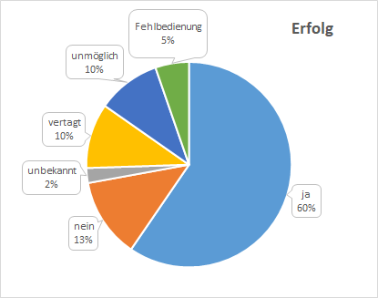
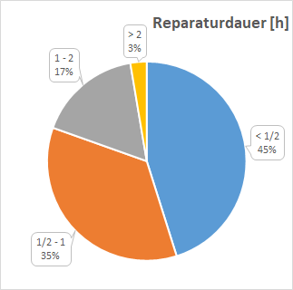
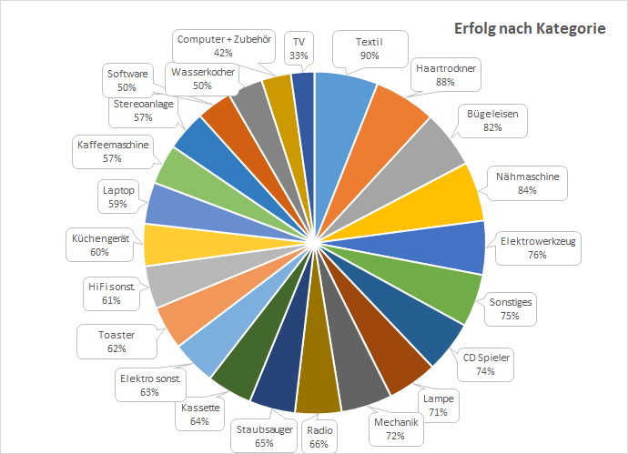

Übersicht der Repair Cafés in Köln

Viel zu oft werden Dinge viel zu schnell entsorgt.
Ob der Toaster streikt, das Radio rauscht, der Staubsauger nicht mehr will oder die Stehlampe dunkel bleibt -
oft muss nur eine Kleinigkeit gerichtet werden.
Repair Cafés bieten Hilfe zur Selbsthilfe - und das in Köln an vielen Orten und zu vielen Zeiten.
Selbsthilfe ist dabei alles zwischen "Wir stellen (Spezial)Werkzeug zur Verfügung, und helfen mit Tipps"
und "Sie beschreiben den Fehler und gucken uns dann interessiert dabei zu, wie wir das Gerät reparieren".
So wird in netter Atmosphäre die Lebensdauer von Alltagsgegenständen verlängert, Müll vermieden und alle lernen dazu.
Die Reparatur(hilfe) ist gratis / auf Spendenbasis, nur Ersatzteile müssen bezahlt werden.
Die Reparaturhelfer*innen arbeiten ehrenamtlich und freuen sich über einen Beitrag.
Repariert wird im Prinzip alles, was man tragen kann, weitere Infos unten.
Die angegebenen Termine sind die Standardtermine der jeweiligen Repair Cafés.
Ausnahmen, besonders in den Sommerferien, zu Karneval, an Feiertagen und zu Weihnachten, sind immer möglich,
von daher bitte auf den entsprechenden Seiten nach den aktuellen Terminen schauen.
Monatliche Termine in Köln
| Termin | Ort | Besonderes |
|---|---|---|
| 1. Montag im Monat 16:00 bis 19:00 |
Dellbrück im Bürgertreff 1006 ✉ Mail an ... |
|
| 1. Montag im Monat 10:00 bis 12:00 |
Riehl im Riehler Treff der SBK ✉ Mail an ... |
Auch Näharbeiten und Rollatoren Termin ist im Monatsprogramm |
| 1. Mittwoch im Monat 18:00 bis 20:00 |
Raderthal im Gemeindesaal Philippuskirche ✉ Mail an ... |
Auch Holzbearbeitung |
| 1. Donnerstag im Monat 15:00 bis 17:00 |
Chorweiler im Bürgerzentrum ✉ Mail an ... |
|
| 1. Donnerstag im Monat 15:00 bis 18:00 |
Westhoven im Bürgerzentrum Engelshof ✉ Mail an ... |
Auch Näharbeiten, Catering Voranmeldungen haben Vorrang |
| 1. Samstag im Monat 13:00 bis 17:00 |
Poll im Quartier am Hafen ✉ Mail an ... |
Auch Näharbeiten, gutes Catering Voranmeldungen haben Vorrang |
| 2. Mittwoch im Monat 15:30 bis 18:30 |
Widdersdorf im Pfarrheim ✉ Mail an ... |
Auch Näharbeiten, gutes Catering |
| 2. Donnerstag im Monat 15:00 bis 17:00 |
Mauenheim im Clubraum St. Quirinus ✉ Mail an ... |
|
| 2. Sonntag im Monat 14:00 bis 19:00 |
Südstadt im Bürgerhaus Stollwerk ✉ Mail an ... |
Anmeldung erforderlich, keine Fahrräder |
| 2. und 4. Sonntag im Monat 11:30 bis 15:00 |
Sülz bei Schmitz und Kunzt ✉ Mail an ... |
Auch Näharbeiten |
| 3. Mittwoch im Monat 17:00 bis 19:00 |
Lindweiler im Libützje ✉ Mail an ... |
Catering |
| 3. Samstag im Monat 11:00 bis 15:00 |
Ehrenfeld im Bürgerzentrum ✉ Mail an ... |
Auch Elektronik, keine Fahrräder |
| 4. Samstag im Monat 14:00 bis 16:00 |
Worringen im AWO-Haus ✉ Mail an ... |
Uhrendiagnose, Messerschleifen, Hilfe bei Näharbeiten. |
| 4. Samstag im Monat 11:00 bis 15:00 |
Innenstadt / Hohe Straße in der Stadtbibliothek ✉ Mail an ... |
Keine Fahrräder |
| letzten Mittwoch im Monat 15:00 bis 18:00 |
Ehrenfeld im Gemeindezentrum Stephanus ✉ Mail an ... |
|
| letzten Freitag im Monat 15:00 bis 17:00 |
Nippes, Wunschnachbarn im Clouth Quartier ✉ Mail an ... |
Auch Elektronik, gutes Catering |
Repair Cafés ohne aktuelle Infos
| Termin | Ort | Besonderes |
|---|---|---|
| 1. Samstag im Monat 11:00 bis 13:00 |
Sülz im Café Lamerdin | Auch Näharbeiten, Termin ist auf der letzten Seite des Programms |
Weitere Reparaturtermine in Köln
| Termin | Ort | Besonderes |
|---|---|---|
| Jeden Freitag 19:00 bis 22:00 |
Ehrenfeld - Bastelabend im Maker Space Dingfabrik ✉ Mail an ... |
Kein Repair Café, aber Gäste sind willkommen |
| Wechselnde Termine | Repair Cafés in den Stadtteilbibliotheken ✉ Mail an ... |
|
| Unregelmäßig | Das mobile Repair Café "Köln Repariert" ✉ Mail an ... |
Verschiedene Standorte |
Was wird repariert?
Im Prinzip alles, was man tragen kann.
Ein Blick auf die Bilder von durchgeführten Reparaturen
und das Kategorien-Diagramm unten geben eine genauere Vorstellung davon, was repariert wird.
Bitte bei entsprechenden Geräten auch das Netzteil, die Fernbedienung, eine CD oder Kassette etc. mitbringen, damit der Fehler nachgestellt und die Reparatur getestet werden kann. Eine Lausprecherbox ist in manchen Repair Cafés vorhanden, aber besser vorher nachfragen.
Bei CD Spielern, deren Lade nicht mehr herauskommt, ist meistens der Antriebsriemen schlapp, der ersetzt werden kann.
CD Spieler, die „No Disc“ anzeigen, sind eher selten erfolgreich zu reparieren, genauso wie Drucker.
Da die Reparatur von Kaffeevollautomaten mehrere Stunden in Anspruch nehmen kann, wird dieser Service in den Repair Cafés in Köln zum Teil nur eingeschränkt angeboten. Am besten vorher nachfragen.
Unter dieser Google Suche
findet man professionelle Reparaturmöglichkeiten für Kaffeemaschinen in Köln.
Bei Druckern, Laptops und Handys besser vorher nachfragen, ob diese dort repariert werden!
Anmeldung per E-Mail
Eine E-Mail bedeutet aber nicht unbedingt, dass man in der Reihenfolge Vorrang hat.
Fahrrad Selbsthilfe-Werkstätten
| Termin | Ort |
|---|---|
| Samstag 12:00 bis 17:00 |
Nippes Liebigstr. 257 am Bahnhof Köln Nippes |
| Dienstag und Freitag 15:00 bis 17:00 (bei Sommerzeit bis 18:00) |
Bickendorfer Fahrradbüdchen in der Nähe des Westfriedhofs |
| Mittwoch 18:00 bis 22:00 |
Bike Kitchen Cologne im AZ an der Luxemburger Str. in der Nähe des Unicenters |
| Dienstag 17:00 bis 19:00 für bedürftige Erwachsene + Freitag 15:00 bis 19:00 + Samstag 14:00 bis 19:00 für Kinder und Jugendliche |
Nippes OT Werkstattstraße 7 / Dormagener Straße 5 |
Textiles Repair Café
| Termin | Ort |
|---|---|
| Donnerstag 11:00 bis 14:00 |
Nippes Sudermannplatz 1 ✉ Mail an ... |
3D Druck Repair Café
| Termin | Infos + Anmeldung |
|---|---|
| Einmal im Monat unregelmäßig | Innenstadt im Museum für Angewandte Kunst Köln |
Reparatur Blog / Bilder von durchgeführten Reparaturen
Nützliche Schaltungen und Bilder für Elektroreparaturen
Allgemeine Fragen zu Repair Cafés und dieser Internetseite bitte an info äht repaircafe-koeln.de (wegen zunemendem Spam etwas verfremdet).
Reparaturanmeldungen bitte an das jeweilige Repair Café senden.
Übersichtskarte der Repair Cafés und Fahrad Selbsthilfe-Werkstätten in Köln und Umgebung
Beim Netzwerk Reparatur-Initiativen eingetragene Initiativen in Köln
Aktuelle Termine einiger eingetragener Repair Cafés und Initiativen in Köln
Repair Cafés in der Kölner Nachbarschaft
| Termin | Ort | Besonderes |
|---|---|---|
| 1. Samstag im Monat 14:00 bis 17:00 |
Rösrath im Gemeindesaal der evangelischen Versöhnungskirche ✉ Mail an ... |
Auch Näharbeiten, Waffeln |
| 1. Samstag im Monat 14:00 bis 18:00 |
Frechen im Mehrgenerationenhaus Oase ✉ Mail an ... |
Auch Näharbeiten, gutes Catering |
| 2. Samstag im Monat 14:00 bis 17:00 |
Hürth im Familienbüro Mittendrin ✉ Mail an ... |
|
| 3. Samstag im Monat 10:00 bis 13:00 |
Bergisch-Gladbach in der Begegnungsstätte Mittendrin der Caritas ✉ Mail an ... |
Möglichst mit Voranmeldung |
| 4. Donnerstag im Monat 14:00 bis 17:30 |
Frechen-Königsdorf im JugendMagnet hinter St Sebastianus ✉ Mail an ... |
Auch Näharbeiten, Catering |
| letzten Samstag im Monat (ausser Dezember) 11:00 bis 15:00 |
Probierwerk in Leverkusen-Opladen ✉ Mail an ... |
Alle ungerade Monate in Opladen, alle gerade an wechselnden Standorten in Leverkusen |
| letzten Samstag im Monat 14:00 bis 17:00 |
Alfter bei Bonn ✉ Mail an ... |
|
| Einmal im Monat am Samstag 14:00 bis 17:00 |
Brühl im MargaretaS ✉ Mail an ... |
Gutes Catering |
| Samstags alle 2 bis 3 Monate 10:30 bis 14:00 |
Pulheim-Brauweiler im DRK Jugendtreff ZAHNRAD ✉ Mail an ... |
Möglichst mit Voranmeldung |
Repair Cafés in Bonn
Schöne Übersichtskarte der Repair Cafés in Bonn
Und noch weiter weg
Übersichtskarte für Deutschland und Österreich von reparatur-initiativen.de
Übersichtskarte internationaler Repair Cafés von repaircafe.org
Links zu Video und Audio Beiträgen
- Ein Beitrag des Morgenmagazins von 18.1.2022 über das Repair Café [161 MB]
- Ausschnitt aus den Tagesthemen vom 27.12.2022 [49 MB]
- Beitrag des WDR 5 Westblicks vom 5.2.2024 [Audio 4:33 Min]
- Instagram Beitrag von kugelzwei des WDR vom 10.1.2024 [0:24 Min]
Bilder der Räumlichkeiten
 |
 |
| Dellbrück in der Bergisch Gladbacher Str. 1006, 51069 Köln | Riehl in der Boltensternstraße 16, 50735 Köln |
 |
 |
| Raderthal im Gemeindesaal der Philippus Kirche in der Albert-Schweitzer-Straße 3-5, 50968 Köln | Chorweiler im Untergeschoss des Bürgerzentrums in der Pariser Passage 1, 50765 Köln |
 |
 |
| Westhoven im Engelshof in der Oberstr. 96, 51149 Köln | Poll im Quartier am Hafen am Poller Kirchweg 78-90, 51105 Köln |
 |
 |
| Widdersdorf in der Hauptstraße 10, 50859 Köln | Mauenheim im Pfarrsaal St. Quirinus in der Bergstr 87, 50739 Köln |
 |
 |
| Stollwerk in der Dreikönigenstr. 23, 50678 Köln | Lindweiler im Libüzje im Marienberger Weg 19, 50767 Köln |
 |
|
| Schmitz und Kunst der Luxemburger Str. 284a, 50937 Köln | |
 |
 |
| BüzE Ehrenfeld in der Venloer Straße 429, 50825 Köln | Worringen in der St.Tönnisstrasse 65, 50769 Köln |
 |
 |
| Innenstadt in der Stadtbibliothek in der Hohe Straße 68-82, 50667 Köln | Ehrenfeld im Gemeindezentrum Stephanus in der Subbelrather Str. 206-210, 50823 Köln |
 |
 |
| Repairmobil des Innovationsbüros der Stadt Köln | Fahrrad Selbsthilfe Werkstatt in der Liebigstr. 257, 50739 Köln |
 |
 |
| Bikekitchen im autonomen Zentrum in der Nähe des Unicenters | Bickendorfer Fahrradbüdchen in der Wolffsohnstr. 12a, 50827 Köln |
 |
 |
| Nachwuchsförderung | Nachwuchsförderung |
 |
 |
| Rösrath in der Hauptstr. 16, 51503 Rösrath | Frechen in der Dr. Tusch-Straße 1–3, 50226 Frechen |
 |
 |
| Hürth in der Bonnstraße 32, 50354 Hürth | Brühl am Heinrich-Fetten-Platz, 50321 Brühl |
 |
 |
| Frechen-Königsdorf in der Aachenerstraße 564, 50226 Frechen | Pulheim-Brauweiler in der Donatusstraße 43, 50259 Pulheim |
 |
 |
| Leverkusen-Opladen in der Stauffenbergstr. 14-20, 51379 Leverkusen | Alfter bei Bonn in der Knipsgasse 43, 53347 Alfter |
Reparaturkategorien

Reparaturstatistiken des Repair Cafés im Büze



Nützliche Schaltpläne und Bilder für Elektroreparaturen
Materialien für ein Repaircafé
- Google Sheets Werkzeug und Messgeräte Liste
- Beispiel für den Laufzettel eines Repair Cafés inclusive Hausordnung und Haftungsbeschränkung auf der Rückseite [PDF] [Word]
- Haftungsbegrenzungsvorlage der Reparatur-Initiativen [PDF]
- Hausordnung von repaircafe.org
- PDF mit Plakaten (mit Pfeilen) des Repaircafes
Weitere Links
- Umfangreiche Linksammlung der Reparatur-Initiativen.
- Eine Handreichung für Reparaturcafé-Besuche in der Kindertagesstätte von Jürgen Klute vom Repair Café VG Nieder-Olm.
- Infos zur Haftplicht- und Unfall-Versicherung für Ehrenamtler in NRW.
- Faltblatt Sicherheit im Ehrenamt NRW